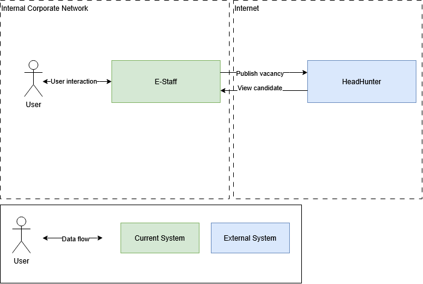

E-Staff
Solution Architecture
February 2025
Contents {#contents .TOC-Heading}
1. Document Control [3](#document-control)
1.1. Revision History [3](#revision-history)
1.2. Document Review and Approval [3](#document-review-and-approval)
1.4. References [3](#references)
2. Introduction [3](#introduction)
2.1. Document Purpose [3](#document-purpose)
2.2. Solution Overview [3](#solution-overview)
2.3. Architecture Overview [4](#architecture-overview)
2.4. Responsibility Matrix [4](#responsibility-matrix)
Document Control
Revision History
Version Author Date (dd/mm/yyyy) Summary of change
1.0 Ivan Ivanov 08.02.2025 Initial version
1.1 Ivan Ivanov 20.02.2025 Updated architecture overview (section 2.5)
Document Review and Approval
Version Approved by Date (dd/mm/yyyy)
1.0 Petr Petrov 11.02.2025
1.1 Petr Petrov 22.02.2025
Acronyms
Acronym Definition
Vendor Datex Software, LLC
References
Item no. Document title Version or date
1 E-Staff product Managed by vendor homepage
2
Introduction
Document Purpose
The document is intended as a reference for system administrators and support engineers in charge of the system deployment and maintenance.
Solution Overview
E-Staff is a system for automatization of corporate recruitment process.
E-Staff enables api integration with HeadHunter (https://dev.hh.ru/).
Architecture Overview

Data flow description:
+----------------+-----------------+-----------------+-----------------+ | Data flow | Source | Destination | Schedule | +================+=================+=================+=================+ | User | User | E-Staff | On user query | | interaction | | | | | +-----------------+-----------------+ | | | E-Staff | User | | +----------------+-----------------+-----------------+-----------------+ | Publish | E-Staff | HeadHunter | On user query | | vacancy | | | | +----------------+-----------------+-----------------+-----------------+ | Get candidate | HeadHunter | E-Staff | On user query | | data | | | | +----------------+-----------------+-----------------+-----------------+
Responsibility Matrix
System Vendor Administrator
E-Staff Datex Software Ivan Ivanov
Headhunter HeadHunter HeadHunter